UE5 PCG 项目 Demo——祇园：东渡
《祇园：东渡》是一个开放世界场景，以 PCG 为展示重点，当前也有一定的剧本和部分可玩性。本作品主要用于体现作者对 UE5 和资产管线的应用能力。
下面的视频演示了目前为止完成的一个线性流程，并不涵盖场景中的全部内容。
下面展示了一些场景中的影像。
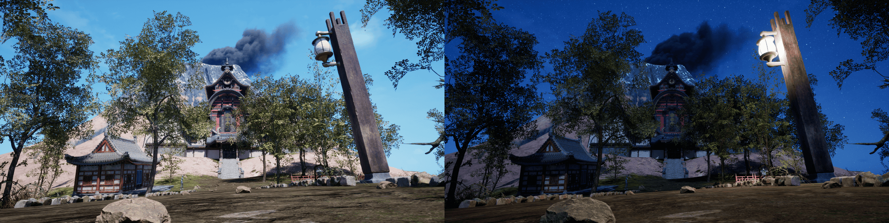
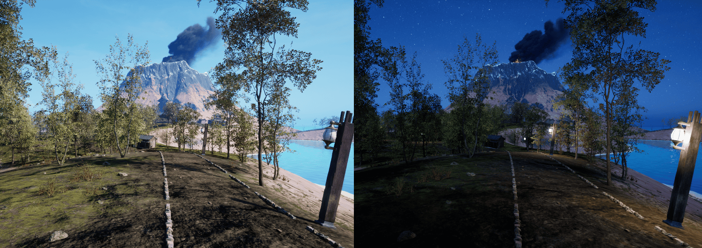
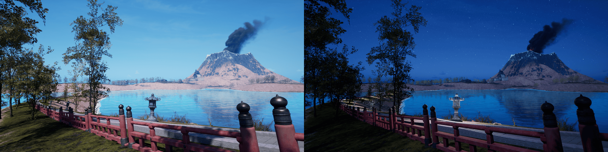
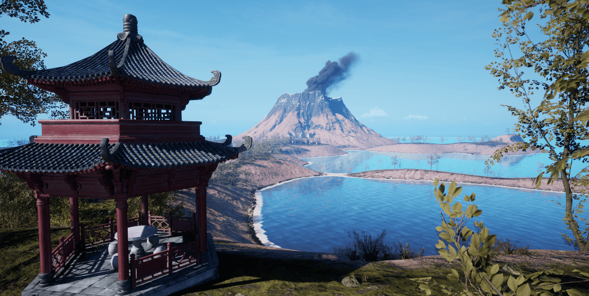
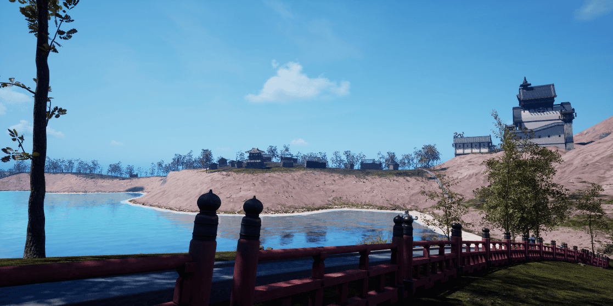
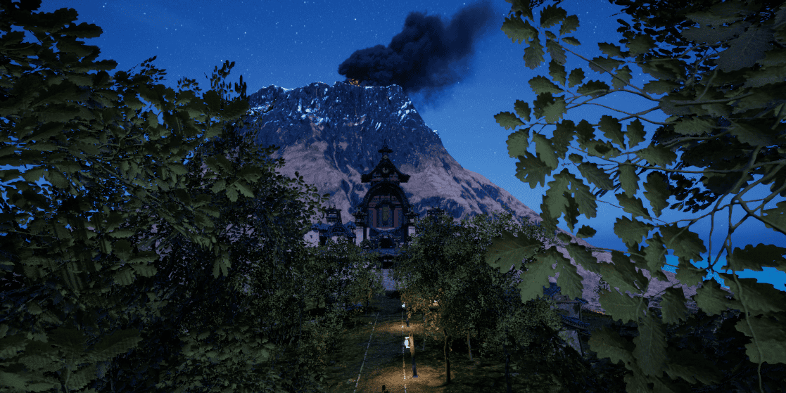
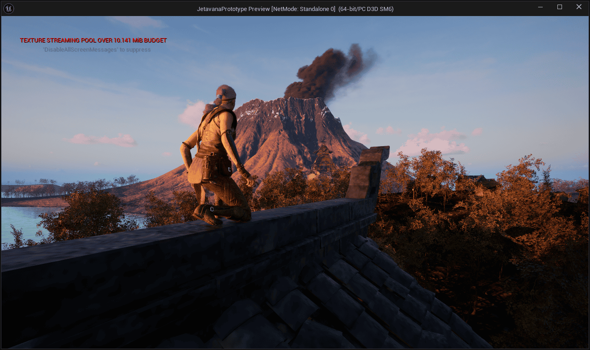
制作流程
- 程序化地形几何：使用 Gaea 软件连接几何节点，从高度图中生成一个 Landscape。
- 程序化地形材质：调参修改后的第三方自动地形材质（MW Landscape Auto Material）。
- 程序化地图资产：利用 UE5 PCG Grpah 制作场景，摆放第三方资产。
- 微调地图资产：手工摆放一些资产。场景中除建筑物是手工摆放之外，其他资产均用 PCG 技术摆放。
- 第三人称角色 locomotion：来自 UE5 Motion Matching 示例项目。
- Gameplay 和材质、视效开发。
开发环境
- Unreal 5.54
- Gaea 2.1.2.0
- CPU: Intel(R) Core(TM) i7-14700KF
- GPU: NVIDIA GeForce RTX 4060
场景在编辑器下的平均运行帧率约为 60 FPS。
技术说明
PCG
本场景很大程度上依赖 PCG 工作流，因此具有非破坏性和灵活性。创建一个开放世界的 PCG 工作流可分为三个步骤：PCG 地形几何、PCG 地形材质和 PCG 资产摆放，下面逐一介绍它们在本场景中的实现。
PCG 地形几何
使用 PCG 技术可以模仿真实世界的地质物理流程，从无到有地构建一个贴近现实的程序化地形。这极大程度上降低了艺术家在无关紧要的地形背景处的工作量，提供了一个良好的模板供精雕细琢。Gaea、World Builder 都是著名的程序化地形生成软件，使用节点式工作流，语义清晰。UE5 Landmass 也提供了类似的功能，但其支持相对于老牌节点式工作流软件并不完善，可能更多地适用于将前者生成的地形导入后做调整。本场景仅使用了 Gaea 完成场景的地形几何生成。
本场景是一个群岛，其中有一个醒目的火山。作者想让这个群岛的俯瞰图特殊一些，于是想到用“示字旁”（礻）作为其外轮廓。使用 Gaea 的 Draw 节点，画一个“示字旁”，就会自动生成一个高度图蒙版了：
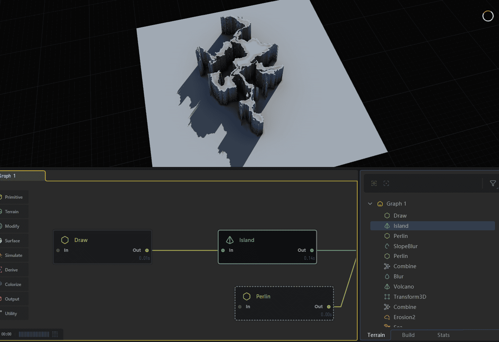
然后使用一系列 Perlin noise、Erosion 节点模拟真实世界的不规则地貌、侵蚀效果等，结合 Volcano 节点生成火山，并与岛屿主体地形取 max 做混合。所有的节点都可调参，以获得更好的效果。最后使用海平面节点确定这是一个群岛：
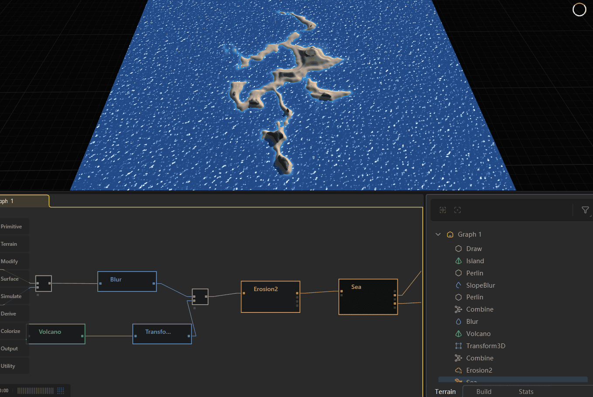
然而，在使用过程中作者发现 Gaea 程序抽风，本来想把火山和岛屿主体混合后导出，结果火山在预览中还存在，导出成 heightmap 就一直消失，不知道什么原因。所以最终分别导出了一个岛屿主体地形，以及一个火山地形，在引擎里面再合并它们。
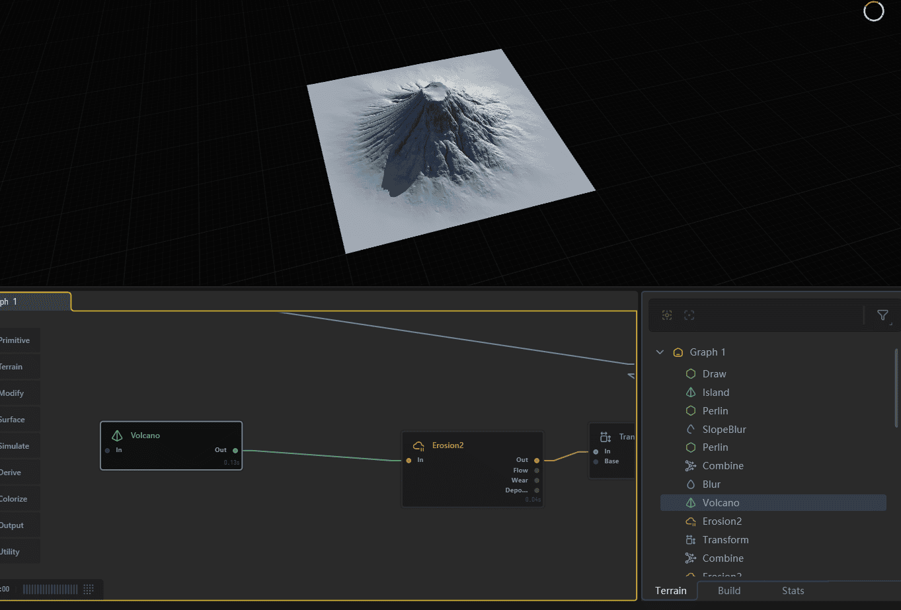
使用 Gaea 官方插件 Gaea2Unreal 将导出的高度图导入 UE5 Landscape。这样我们就获得了空荡荡的两个地形：岛屿主体和火山。
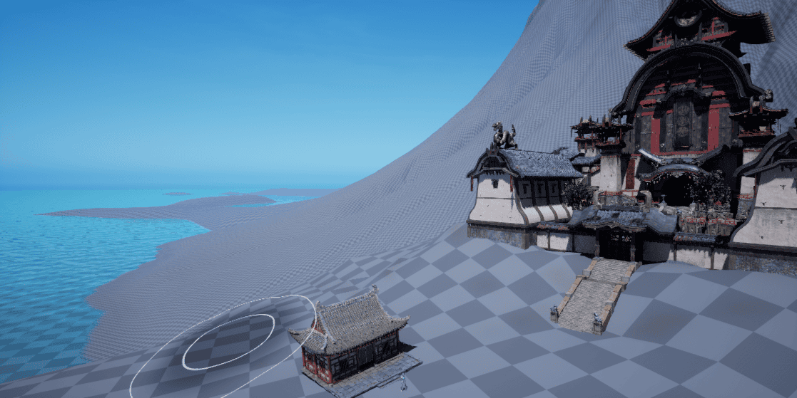
在 UE5 中，可自由调整地形的缩放和位置，也可以使用笔刷对地形几何做微调。图中神庙附近的地形即为用 UE5 地形笔刷后调整的。
PCG 地形材质
有了地形之后，我们还需要赋予其程序化材质，让材质根据此处的高度、坡度和其他混合信息自动指定哪些地方应该长草、裸露岩石或被积雪覆盖。实现自动地形材质一般有两种方法：
- Gaea、World Builder 等软件支持在程序化生成地形几何时，应用相应规则自动生成材质遮罩，进而可以在 UE5 中直接利用该遮罩指定草地、山地和雪地等地形材质。
- 在 UE5 中编写材质，通过 shader 逻辑为不同的地块生成相应的遮罩，赋予相应的地形材质。
作者采用了后者方案，在 UE5 中使用材质节点，设计规则生成了程序化地形材质。计算材质节点生成遮罩后，采样相应纹理资产即可得到最终地形材质呈现的结果。
本场景的程序化地形材质基于 MW Landscape Auto Material。这个材质蓝图看起来相当复杂，实际上核心算法大致可以拆分成以下几个模块：
- 高度（height）混合。通过此处的世界坐标的高度（\(z\) 值），结合参考高度参数，得到一个高度蒙版，可用于插值混合高海拔的雪地纹理和低海拔的草地、泥土纹理。
- 坡度（slope）混合。通过此处的法向与 \((0,0,1)\) 点乘计算坡度，得到一个坡度蒙版，用来混合平坦区域的草地、泥土和陡峭区域的岩石纹理。
- 纹理平铺（tiling）。峭壁的 uv 可能会被拉伸，平坦的区域纹理可能会呈现重复。前者可使用三平面投影（tri-planar projection）算法处理，后者可通过混合 uv 平铺参数和随机扰度处理。
- 简单的程序化资产摆放。UE 有一个耦合材质和其上方的草地植被资产的功能，称地形草地工具（Landscape Grass），可以在地形材质中设定为某种类型的材质遮罩自动摆放 PCG 草地。由于场景的 PCG 资产摆放需要支持更灵活的的逻辑，因此没有使用这一工具摆放 PCG 植被资产。
此外，还有用户可控的自定义材质笔刷功能等，用于人工修改 PCG 材质的生成结果。由此，我们就可以实现诸如“低海拔平坦区域为沙滩”，“中海拔平坦区域长草”，“中海拔陡峭区域裸露岩石”和“高海拔区域被积雪覆盖”等材质逻辑，并在不同材质交界处进行混合。各混合参数均可在材质实例中调整。经过一系列调整，结合高质量的纹理资产后，我们就可以得到一个看上去比较美观的地形了。
地形材质设置完成后，就可以给场景添加海水了。海水可以使用 UE5 的 Water 插件中自带的 WaterBodyOcean 创建。
物理材质遮罩
UE5.2 PCG插件撒点在自动地形材质上的办法 - Sampling Landscape Auto Materials_哔哩哔哩_bilibili
为了后续 PCG 资产摆放操作的便利性，我们还需要为地形材质指定物理材质标签遮罩，这样后续在 PCG 时就可以采样该点的物理材质标签，知道该点属于草地、泥土、峭壁还是雪地，进而可以设计相应的过滤器，仅在选定的地形材质上进行 PCG。
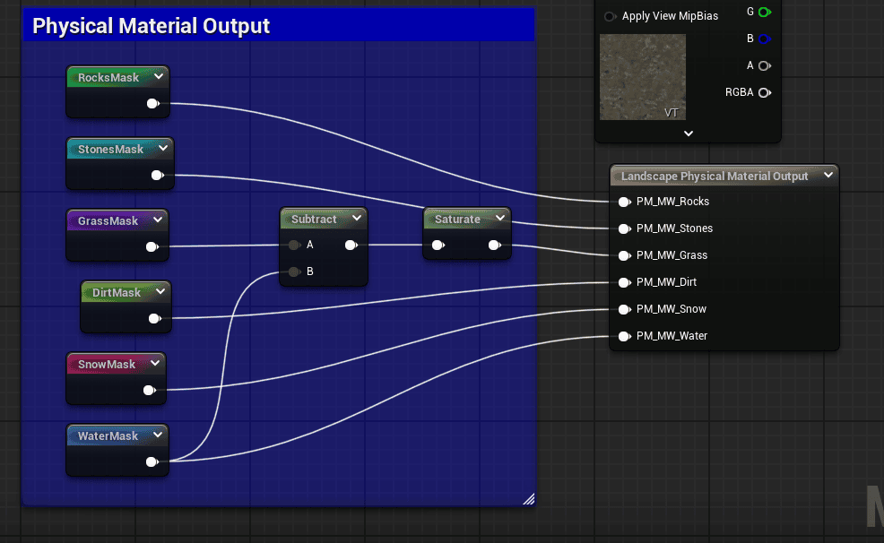
PCG 资产摆放
将地形几何和地形材质准备好后，我们就可以在其上摆放植被、树木、岩石和建筑等资产了。本场景使用的是 UE5 最新的 PCG Graph 功能完成资产摆放。
UE5 在更新 PCG Graph 前，就有一套不完备的 PCG 功能，即地形草地工具和程序化植被工具（Procedural Foliage）。这套工具操作简单，只需配置网格体、密度数据表，程序就会自动在指定的区域自动生成静态网格体。但它不支持逻辑式的生成，因此无法调控模型之间的聚合、分散等逻辑，若模型之间发生穿插将无法修改，且不支持在指定区域遮罩上的自动混合、剔除等功能，也不支持非植被 Actor 的生成。
自 UE 5.2 推出 PCG Graph 后，PCG 资产摆放工作理论上就可以在引擎内部完成，不必借助 Houdini 等 DCC 软件。Epic Games 提供了一个基于 Houdini 城市引擎的城市示例项目演示（黑客帝国觉醒），以及一个基于 UE5 PCG Graph 的 Electric Dreams 场景，前者为城市场景，后者为森林场景，两者的核心内容均为 PCG 静态资产摆放。
PCG Graph 不仅支持摆放已有的资产，还支持多种资产的组合逻辑摆放，例如树干模型上的青苔模型或贴花，道路模型上的护栏模型等。
PCG Graph 是编辑时的 PCG 生成工具，对静态网格体和静态 Actor 生成有很好的支持，但对于人群、车流等运行时动态 Actor 的生成，还需要使用 Mass AI 等其他工具。
PCG Graph
本场景的 PCG 资产摆放主要使用一个 PCG Graph，它的节点连接经过多次迭代已经变得相当复杂（尽管复杂程度可能还比不上 Epic Games 提供的 Electric Dreams）：
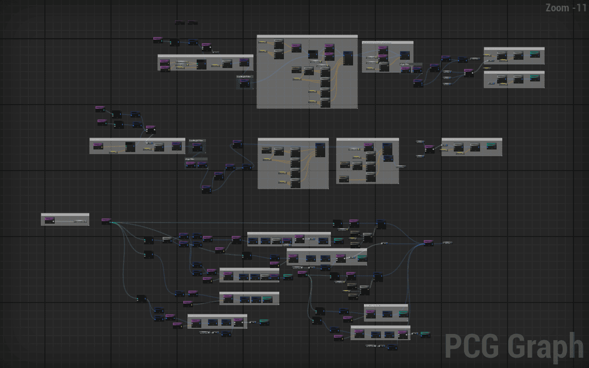
当然，PCG Graph 的核心逻辑不外乎采样、反复的过滤/变换、生成这一套流水线。以树木为例：
- 采样：树木在地形上生长，因此需要采样地形。
- 过滤：树木长在中海拔的平草地上，在陡坡上出现的密度随坡度增大而降低。因此需要根据地形物理材质、世界位置高度和坡度做过滤。
- 变换：树木的形态大小各异，分散不均，因此可以进行随机的等比例缩放，随机的绕 \(z\) 轴的旋转，以及随机的 \(x, y\) 方向的位移。
- 过滤：树木之间不能互相穿插，也不能与其他草、石头穿插，也不能生成在道路遮罩上，因此需要做相交检测和剔除。
- 生成：树木对应的静态网格体资产各异，每种资产可能具有不同的生成权重、材质变体。
在这一过程中，我们可以可视化 PCG 采样点结果，以更好地微调 PCG 节点流程，如下图所示：
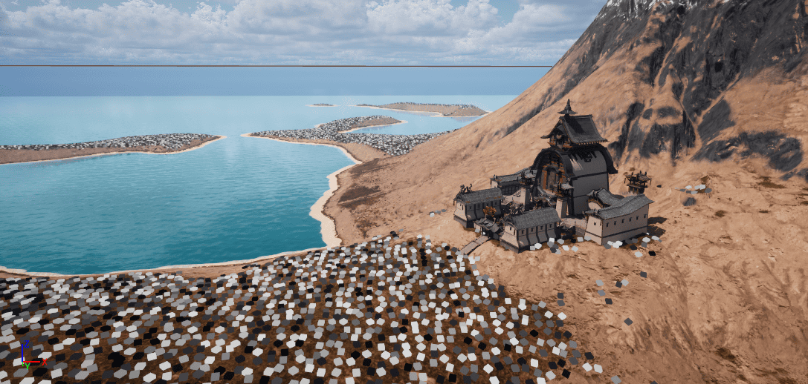
再如，由于修路需要砍伐树木，道路旁往往会出现树桩。以这些树桩为例：
- 采样与变换：树桩位于道路两侧，因此需要采样道路样条线，设道路前进方向为 \(x\) 轴，则需要根据道路宽度做随机的 \(y\) 方向位移。
- 投影：之前采样的道路样条线不一定位于地形上，因此需要将采样点投影到地形上。
- 变换：树桩的形态大小各异，分散不均，因此可以进行随机的等比例缩放，随机的绕 \(z\) 轴的旋转，以及随机的 \(x, y\) 方向的位移。
- 过滤：树桩之间不能互相穿插，也不能与其他树木、草、石头穿插，也不能生成在道路遮罩上，因此需要做相交检测和剔除。
- 生成：同树木的生成。
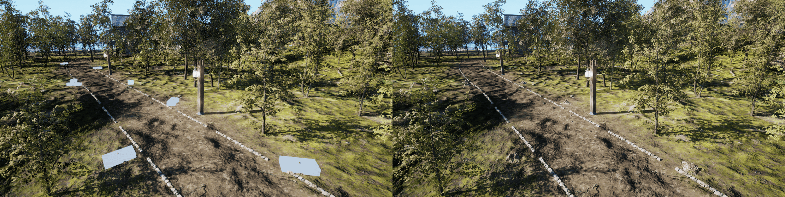
下面是草地 PCG Graph 的局部，该部分包含一个网格均匀采样（Create Points Grid），将地形采样点进行细分。
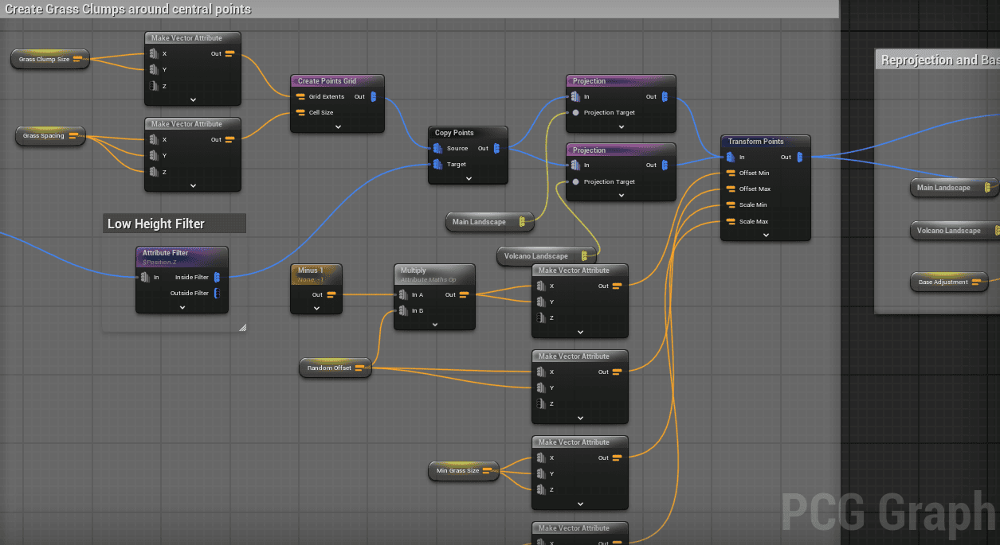
具体地，Copy Points 节点的 Source 输入为局部网格均匀采样，设采样点为数目为 \(m\)；Copy Points 的 Target 输入为过滤后的地形均匀采样，设采样点数目为 \(n\)。那么，由于此 Copy Points 节点设置了 copy each source on every target，其将输出 \(m \times n\) 个采样点，相当于为每个 Target 采样点进行了均匀的 \(m\) 级细分。密度参数诸如 Grass Clump Size、Grass Spacing 和其他变换参数可暴露于编辑器供调参。
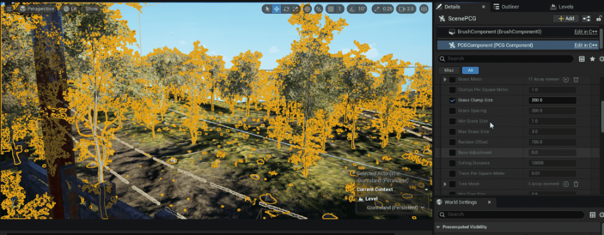
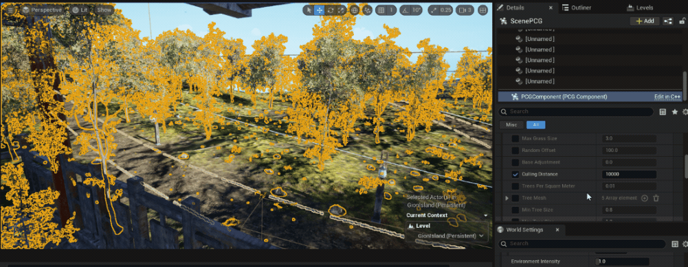
下面是道路两端生成树桩和路灯的 PCG Graph 的局部。其中，树桩为静态网格体，而路灯为静态 Actor，需执行昼夜循环逻辑。二者均进行了相交检测和剔除，剔除逻辑基于包围盒之间的相交检测（通过 Bounds Modifier 控制包围盒大小），以及道路样条线放样得到的蒙版 Road Mask。
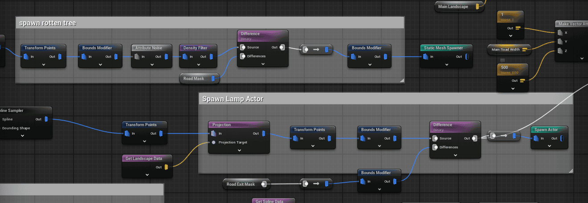
道路曲线放样
PCG Graph 可以方便地从样条线生成有体积的道路资产，这一过程可称为“曲线放样”。下面的道路都是 PCG 基于样条线生成的：
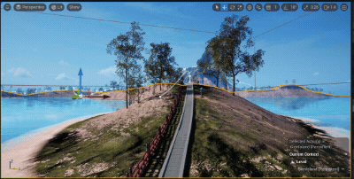
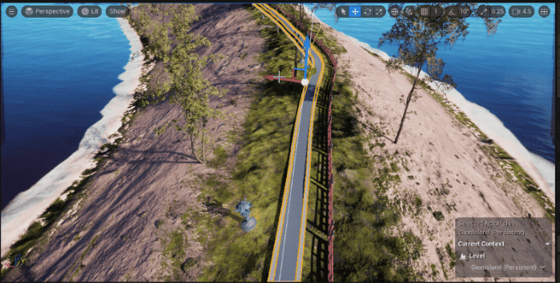
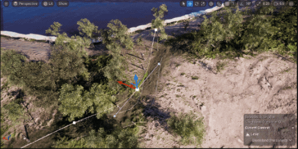
道路资产可以使用子关卡预先制作，该子关卡包含多个标签的资产，如“道路主干”“路沿石”“路灯”等。在 PCG Graph 中，沿着样条线实例化子关卡，并分别取这些标签，指定它们的生成逻辑，赋予各自的变换、过滤逻辑。
指定样条线和道路宽度，即可自动剔除道路部分生成的植被，这大大方便了场景美术对地图资产的编辑工作。
PCG 排除体积
在使用 PCG Graph 的过程中，可以使用带标签的闭合曲线或等价的盒体碰撞体，设置排除体积蒙版，指定某些区域禁止生成 PCG 资产，这样就可以创建道路出口逻辑，或让艺术家自定义这一区域的内容，实现程序化生成与人工干涉的结合。
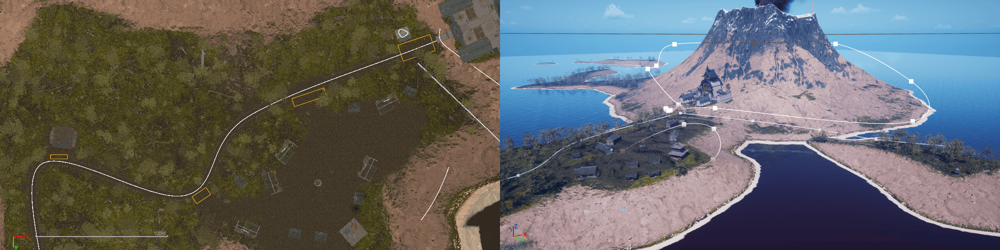
上左图的白线为道路样条线，黄色盒体为道路边缘的排除体积，可阻止道路资产在此生成，即形成道路“出口”。上右图中的火山、村庄区域均有一个闭合样条线，其在高度上扫掠得到的体积可阻止植被资产的生成。
Gameplay
可交互逻辑
游戏中，角色可以与场景中的一些可交互物件互动，如门、灯、NPC 等。出于性能和解耦考虑，项目没有在可交互物件中检测角色，而是使用了从角色出发，查询附近的可交互物件的蓝图逻辑，避免对每个可交互物件做 tick 或碰撞检测的开销。
为此，所有的可交互物件都需要继承蓝图接口
BPI_Interactable，该接口包含以下事件：交互
Interact（按 E 键触发）、重叠
Overlap（用于路径点）、显示交互文字提示
ShowPrompt、不显示交互文字提示
UnshowPrompt。
当角色附近检测到可交互物件时，即进入可交互范围，通知该物件
ShowPrompt 事件，显示自身的交互文字提示，如“按 E
键开启”。玩家在按下 E 键后，该可交互物件接收 Interact
事件，执行相应逻辑。玩家离开可交互范围后，通知 UnshowPrompt
即可。对于路径点，其不具备交互和交互提示，只需在玩家与其重叠时通知其
Overlap 即可。
这一流程也可方便处理当玩家附近有多个可交互物件时，按下交互键该如何处理的问题。简单的实现方式是根据各个物体到玩家的距离，取距离最近者单独交互。
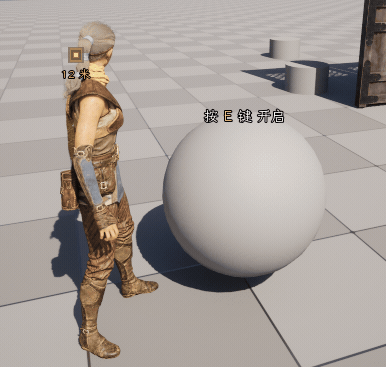
相机过渡
游戏的标题画面相机，使用的是一个蓝图编程的看向指定物体，同时自身绕某个圆心旋转，并具有一定抖动的相机。在玩家点击“新游戏”后，该相机会逐渐过渡到操纵游戏角色的相机。
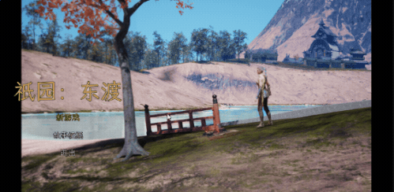
Sequencer 是 UE5 的过场动画系统，功能十分强大，堪比专业的电影制作软件。在玩家到达指定位置后，游戏播放一个 Sequencer 对场景做了总览。同样地，这一 Sequencer 在淡入、淡出时，将角色相机与过场动画相机进行了混合。
UI
UE5 中的游戏 UI 基本上就是 UMG。UMG 是基于底层的 Slate 框架的，而
Widget 是 UMG 中所有 UI 元素的基类，UserWidget
是 UI 界面组合的容器类。
标题画面与暂停画面
标题画面 UserWidget 由关卡蓝图创建，在玩家开始游戏后即移除。暂停画面 UserWidget 绑定到角色上，按下 Tab 键即可触发。
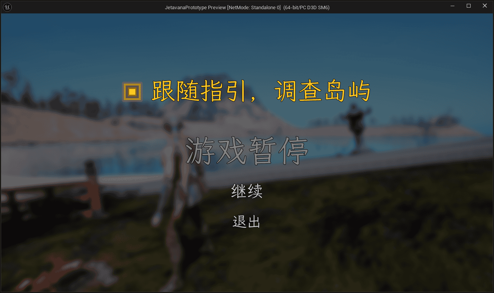
富文本交互提示
在交互提示中，需要为按键文本如“E 键”的“E”指定醒目的颜色，为此使用 UE5 提供的富文本标签功能，在同一文本框中实现不同样式的文字。
字幕系统
本项目的字幕系统包括：
- 绑定于角色的字幕 Widget。
- 字幕数据表
SubtitleData，包含若干行字幕数据，包括文本数据、样式数据。 - 每个继承了蓝图接口
BPI_Subtitle的 Actor 均可调用的函数ReadSubtitle，输入参数为起始行 \(s\) 和终止行 \(e\)，Widget 将自动串行播放第 \(s\) 行，第 \(s+1\) 行……直到第 \(e\) 行字幕。
昼夜循环
场景使用的 Ultra Dyanmic Sky 天空盒昼夜循环系统已经提供了完善的 TOD
系统，暴露了许多时间查询
API。我们的场景在关卡蓝图中，查询当前时间是否为白天-黑夜交接，然后通知场景中所有的灯具
SwitchLight 事件即可。
SwitchLight
做了一个动画效果，让灯具的亮度在时间上有平滑过渡。
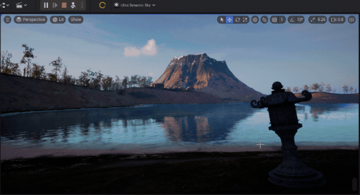
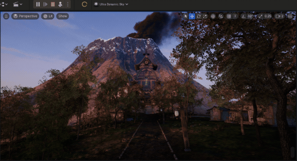
碰撞体
场景中的许多物体直接使用简单盒体碰撞即可。对于台阶，需要手动摆放不可视的斜坡碰撞体取代原模型的碰撞，以避免走台阶时出现顿挫。IK 会自动将角色的脚修正到真实的台阶模型上。不过，真正自然的角色走台阶动画可能是个不小的难题。
线性路径点
场景中实现了线性的路径点，以提示玩家下一步的目的地。
管理路径点
路径点在编辑器中创建，WaypointManager
将会对编辑器中的所有线性路径点做检索、排序和存储。例如，在编辑器中有
\(n\) 个路径点，每个路径点的名称为
SequentialWaypoint{i}，其中 {i} 为正整数，那么
WaypointManager 将在 Construction Script
中遍历它们，并根据名称字典序进行排序，存放于自身的数组变量中。
在运行时，所有路径点默认处于非激活状态，由游戏逻辑驱动
WaypointManager 顺序调用 NextWaypoint
来生成下一个路径点，或称将该路径点“激活”。这样就可以按顺序生成
SequentialWaypoint1，SequentialWaypoint2
等路径点了。
当然，这只是最简单的线性路径点的管理方式，更复杂的任务逻辑，可能需要将它们组织成一个有向无环图的结构。
显示路径点
2D 的路径点在 UI 上有两种显示逻辑：
- 若路径点从世界空间投影到屏幕上位于合理的屏幕范围内，则直接在屏幕中显示即可。
- 否则，需要根据屏幕范围，
clamp路径点投影位置到屏幕边缘，同时将 2D 的显示图变成箭头样式，提示玩家当前路径点不在屏幕可见范围内。
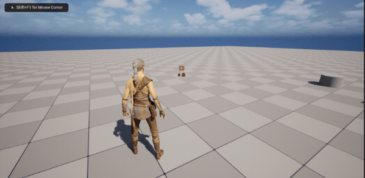
NPC 注视玩家
当玩家移动到 NPC 面前时，NPC 动画应当叠加一个“注视玩家”的成分，即让头部和上半身朝向玩家的位置。我们采用一个 Control Rig 来修正动画：
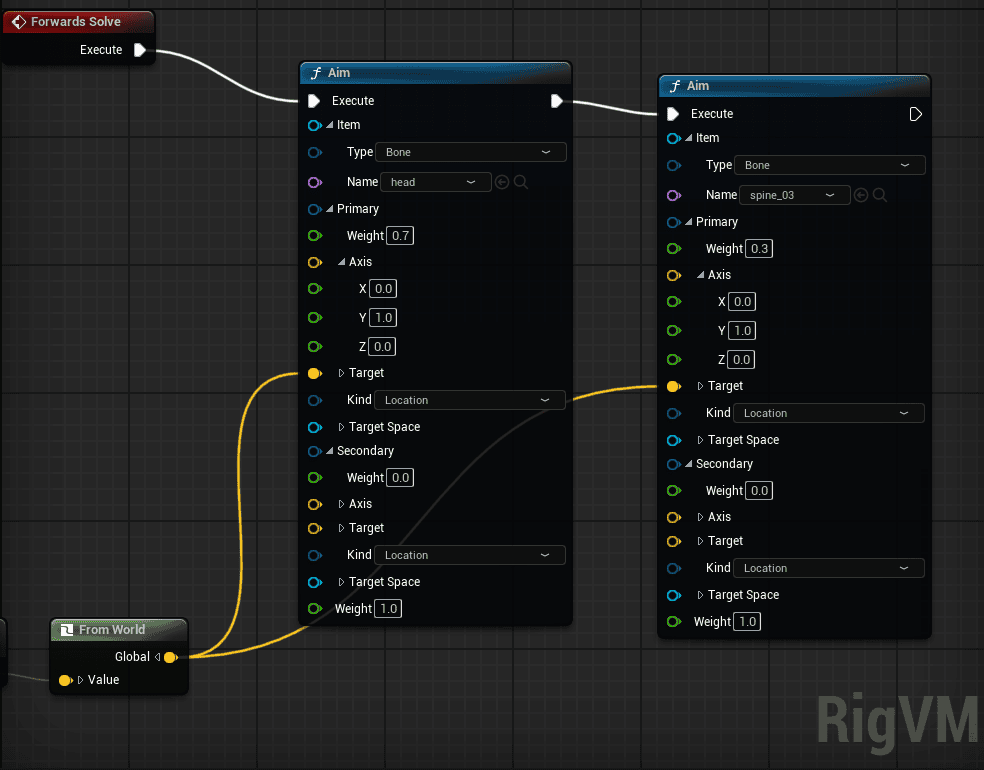
以上的逻辑是，对 head（头部）和 spine3（上半身）骨骼进行 IK 解算，在世界空间中，将骨骼局部坐标向量与输入的向量参数对齐。这里对齐的向量是骨骼局部的 \(y\) 轴，表示角色的朝向（可通过骨骼实际坐标系验证）。在我们的逻辑中，输入的向量自然就是玩家角色模型位置与 NPC 角色模型位置之差。
假设我们的 NPC 始终播放 Idle 动画，在 Animation Graph 中应用此 Control Rig 如下：
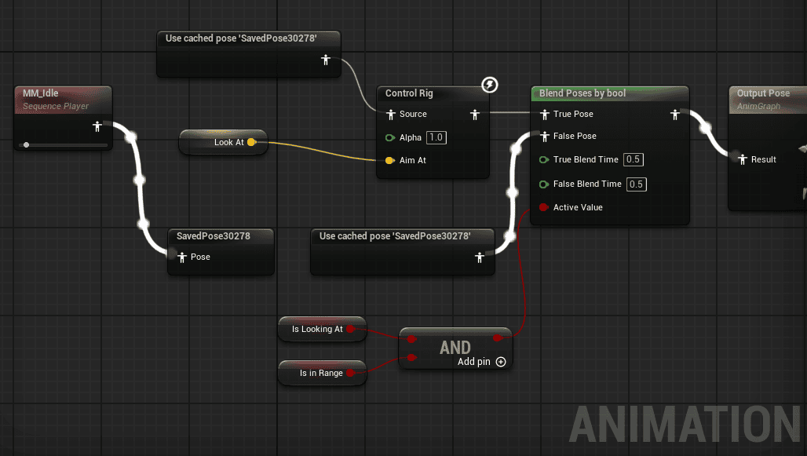
其中的所有参数均通过动画蓝图 Event Graph tick
输入。LookAt 是 NPC 角色蓝图 tick
的结果，IsLookingAt
控制该注视逻辑是否生效，IsInRange
控制该注释逻辑不适用于角色处于 NPC
背后的情况（否则将导致脖子转角非正常）。
结合 NPC 角色蓝图运行时可交互逻辑，我们让角色通知该 NPC
是否该“被激活”（可通过 ShowPrompt 事件执行），然后 NPC
即可计算注视向量，传递给动画蓝图，进而实现注视逻辑。
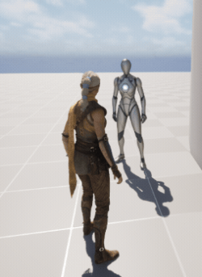
类似地，也可以实现玩家注视 NPC 的逻辑，这里不再赘述。
材质与视效
空气墙材质
作者认为，游戏中的空气墙不应该是完全透明的，应该给玩家应该“你已触碰到边界”的提示。我们可以在玩家到达空气墙附近时，让透明空气墙具有发光纹理，该纹理可产生随机扰动，以制造“科技能量场”或“魔法屏障”的视觉观感。
发光空气墙材质的实现思路如下：
- 采样空气墙表面坐标 \(\mathbf p\)，获取角色当前世界坐标 \(\mathbf x\)。
- 若两者距离 \(||\mathbf p - \mathbf
x||\) 小于阈值 \(R\)，则对该空气墙表面应用一个发光材质（可用
SphereMask节点计算该过程，其可控制 hardness，过渡圆形边缘）。 - 否则，说明角色距离空气墙仍有一定的距离，使用全透明空气墙即可。
实现效果如下：
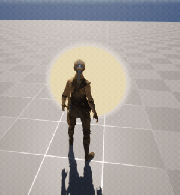
可以进一步使用引擎自带的 Motion_4WayChaos，在时域上采样
Perlin noise
生成四向的噪声扰动，进而产生空气墙材质动画，如下图所示：
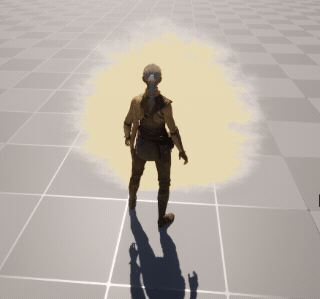
当然，这种效果可能还不是很美观。
光照路灯视觉欺骗
出于性能考虑，尽管场景中所有的光照路灯模型看上去是面光源，但它们实际上都使用点光源。但放置于模型内部的点光源对路灯模型本身的照明效果并不好，让路灯看上去有一种漏光效果，很不真实。
为此，作者想了一个很奇怪的方法来优化路灯的视觉效果。这个方法是：
- 为每个灯具创建一个只影响自身的点光源，其只能照亮灯具模型本身，并投射灯具模型的阴影，但对场景无光照影响。
- 每个灯具的真正的点光源可影响场景，但不能照亮灯具模型，也不投射灯具模型的阴影，只投射其他模型的阴影。
可以通过光照通道（channel）实现以上效果，这样就能得到虚假但看上去还行的路灯照明了。图中左侧灯具是使用本方法后的效果，右侧是直接使用一个点光源的效果。如果希望路灯看起来更亮一点，只需修改只影响自身的点光源的亮度即可。当然，这种方法有很多问题，比如性能上的浪费，以及两个路灯不能互相照明彼此，等等。
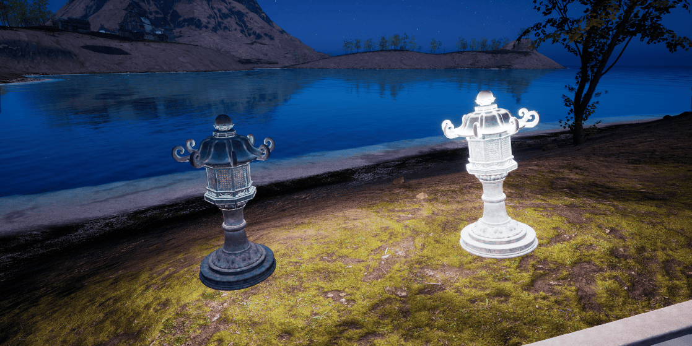
VDB 体积特效
VDB（Volumetric Dynamic Bounding）是一种预烘焙的体积纹理，采用稀疏体素存储，可用于制作动画特效。相对粒子系统，其可具有更细节的视觉效果，但并不具备引擎编辑器内编程与修改的灵活性。本项目应用了第三方篝火 VDB 特效和火山烟雾 VDB 特效。
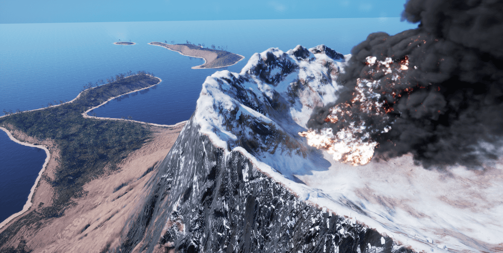
为了避免火山烟雾特效被距离剔除，使用控制台命令
1 | r.HeterogeneousVolumes.MaxTraceDistance 200000 |
将剔除距离调到一个更高的值即可。
运行时虚拟纹理过渡
使用运行时虚拟纹理（RVT）可以在运行时传递纹理参数，混合地形材质与地形之上的模型材质，实现两者之间的平滑过渡。它的实现思路如下：
- 为地形材质创建 RVT 的写入对象。
- 使用 RVT 体积，体积内部的 RVT 可被实时写入。
- 在模型中采样 RVT，根据地形 heightmap 混合自身材质参数与地形材质 RVT 参数，实现平滑过渡。
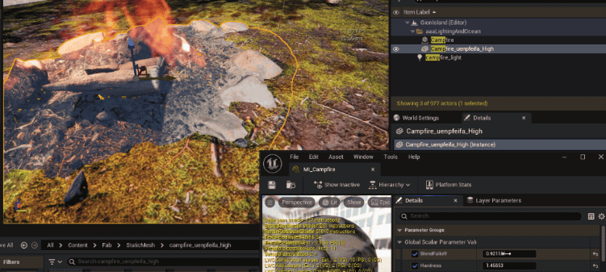
后处理
当前项目基本使用 Ultra Dynamic Sky 的默认后处理配置，没有为项目添加多余的后处理效果，如使用 LUT 调色。
我很好奇实际项目中，是否会为昼夜不同时间段配置不同的后处理参数，如 LUT。如果是这样的话，可能调色工作会更麻烦一些。
优化考虑
Nanite
除骨骼网格体外，包括地形，场景中的所有模型均开启了 Nanite。这样就不需要担心模型的 LOD 资产是否完备了。
使用 Nanite 地形可以方便地对地形做细分，应用凹凸纹理，不过目前并没有这样的 bump map 资产。
地形流送虚拟纹理
场景中地形纹理采样的贴图是高清的，可能占用许多显存，因此使用流送虚拟纹理（SVT）是一项不错的优化。
子关卡
子关卡可以方便地管理关卡中的某些资产群组，也可以选择性地作为流送单元，避免不必要的加载，以提高性能。本项目当前只用了子关卡来管理神庙的各项资产——如果仅希望修改神庙内的内容，如游戏逻辑、资产放置，则不必在大世界关卡中修改，只需修改神庙关卡中的内容即可。
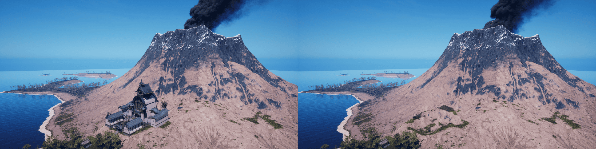
世界分区
世界分区是 UE5 在大世界场景的基于均匀网格的关卡流送机制。目前这个场景的规模还不足以需要开启世界分区优化。
工具开发
编辑地形时禁用 PCG 生成
Megurine/UnrealPCGVolume: Custom PCGVolume disabled during landscape edit to avoid OutOfMemory crash
现有的 UE5 没有提供一个接口，让开发者在编辑地形时自动禁用实时 PCG 生成。这导致我们每画一笔地形，PCG 就重新生成一次，可能导致持续性的卡顿，严重影响开发。如果禁用所有 PCG Graph 的自动生成，那么每次进入地形编辑都需要手动禁用一次，每次退出地形编辑都需要手动开启一次，仍会带来很大的麻烦。
本项目参考了 Epic Developer 论坛的帖子，编写一个 C++ 类
DLM_PCGVolume，继承并替换 PCGVolume
类实现这一效果。在 DLM_PCGVolume 类下的 PCG Volume
会在检测到编辑器处于 Landscape 编辑模式下时，禁用 PCG
自动更新。可进一步将其拓展为多个开关选项：
- 在任何情况下都禁用 PCG 自动更新
- 在 Landscape 编辑模式下才禁用自动更新
- 不禁用自动更新（
PCGVolume类的默认行为）
样条线复制工具
在 PCG 工作流中，经常会有复制样条线的需求，例如复制道路样条线进行修改对比，或是复制 bounding 样条线指定 PCG 生成区域。
然而，UE5 居然没有复制样条线的功能：复制 Spline component 只能复制该样条线的一个顶点，无法复制整个样条线（分段样条）。类似地，参考 B 站社区提供的教程来实现这一点。
蓝图排序功能
UE C++ 有 TArray
的排序方法，但蓝图中却没有提供，这给线性路径点管理的实现带来了麻烦。本项目没有自己造轮子，而是使用了
LE Extended Standard Library 插件提供的排序方法。
借物表
本项目的学习过程中包含或参考了如下第三方产品，包括资产、功能开发等，它们可能在 Blender 或/和 UE5 中经历了更符合项目需求的修改。为此向相应作者致以谢意。
来自 Epic Games：
- Slay Animation Sample | Fab，提供了大量的日式建筑资产，并且构成了场景中的神庙部分。
- Game Animation Sample | Fab，提供了角色动画 Motion Matching 模板。
- Electric Dreams Env | Fab，提供了 PCG Graph 参考。
来自其他第三方：
- Ultra Dynamic Sky | Fab，提供了天空盒昼夜循环系统。
- MW Landscape Auto Material | Fab，提供了 PCG 地形材质模板。
- MW Broadleaf Forest Trees Biome | Fab，提供了树木、植被和小石子资产。
- Asian Forest Town - Yos3D，提供了亚洲风格建筑资产。
- Free VDB Volumes Created With EmberGen，提供了火焰和烟雾 VDB 特效。
- Campfire | Fab，提供了篝火模型资产。
- LE Extended Standard Library | Fab，提供了蓝图排序节点。
剧本设计与美术设计
这部分内容与技术无关，可以理解为作者的自嗨。
《祇园：东渡》与《祇园》的许多剧本一样，来源于现实世界中的宗教事件。本剧本的原型是“鉴真东渡”。历史上的鉴真东渡是一次艰难的旅程，在第六次东渡时才得以成功。鉴真东渡。公元 753 年，鉴真和尚的第六次东渡从苏州出发，横渡东海，经琉球群岛抵九州岛，终于踏上了日本的土地。
在《祇园》的世界观下，这次东渡是沙门反抗组织扩张的重要举措。沙门（原型为佛教）到震旦（原型为中国）站稳脚跟，取得民心，转化反动势力之后，自然需要有计划地扩张组织的影响范围，而这次的目的地是极东之地——“扶桑”（原型为日本）。然而，高高在上的天神视沙门为眼中钉，不可能让他们轻而易举实现文明交流，遂有意制造风暴灾难阻止船队前进。于是，主角被吹到原型为琉球的岛屿上，进行新的冒险之旅。这座岛上的居民称他们的神社为“御岳”，神名为“奄美”，原型为琉球神话的阿摩美久神。
本开放世界场景中的岛屿，原型是琉球群岛中的火山岛。然而，受能获取到的资产所限，很难针对当地生态环境设置植被，因此场景的生态其实并不能禁得起推敲。作者参考了现实中同一地带的火山岛，如诹访之濑岛火山、口永良部岛的图片，发现它们并不能称得上十分美观。所以，场景中的火山积雪，大概只是某种缝合了富士山的美术畅想，也就是胡乱发挥。
岛屿本身呈现示字旁，即“神”的偏旁部首，暗示这座岛屿的归属。不过，似乎也有另一种解读偏旁部首的方式……
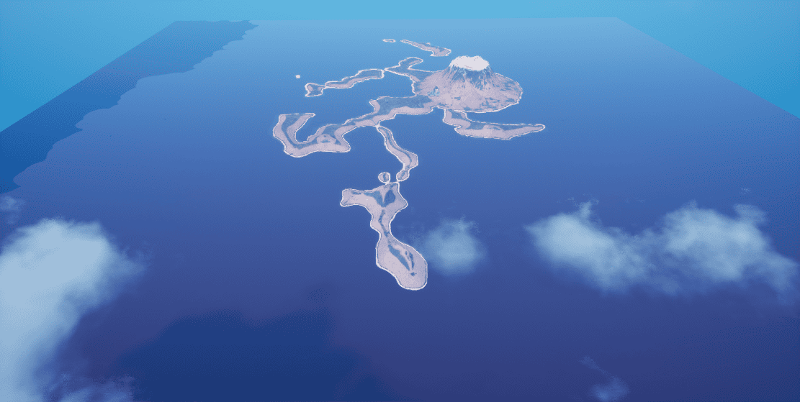
进一步开发计划
PCG
- 城镇 PCG。村庄和城市都是可以用 PCG 逻辑生成的，可指定的参数包括城镇内部的道路样条线、区块类型（不同的区块生成不同的建筑类型）。
- GPU 上的 PCG。以采样点为基本单元执行 PCG 流程，这很适合在 GPU 上并行，提高编辑时的 PCG 效率，但要处理许多计算图中的依赖问题。UE 5.6是只试验性地开放了部分 PCG Graph 节点的 GPU 执行，不过这个功能绝对未来可期。
其他
- 完善剧本
- 开发游泳功能、潜水功能，绘制海底地形
- 探索更多开放世界游戏可玩性